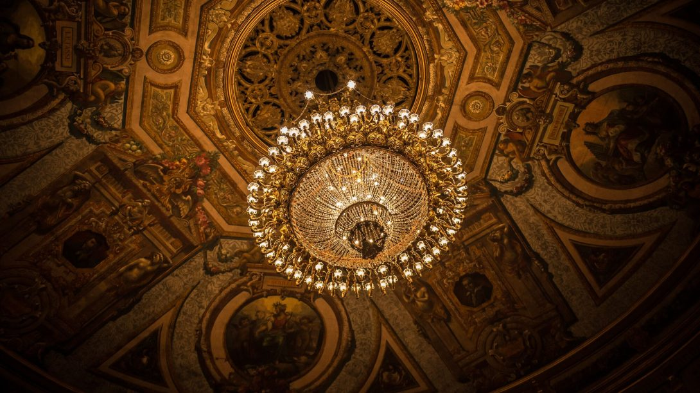
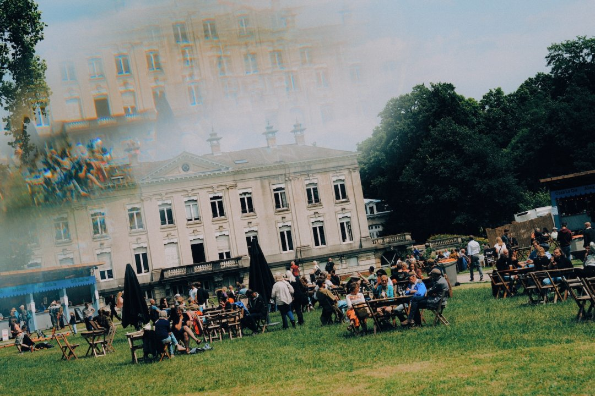
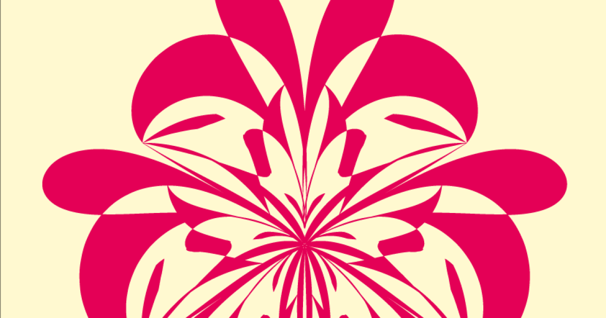
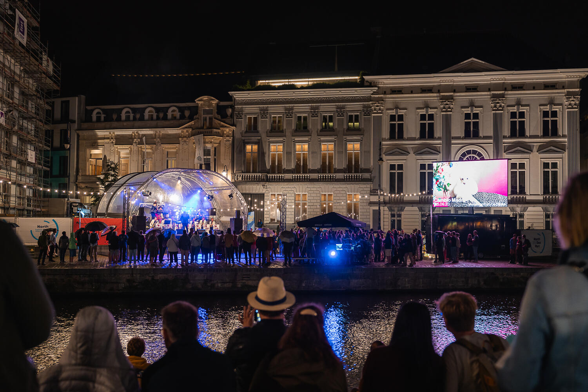
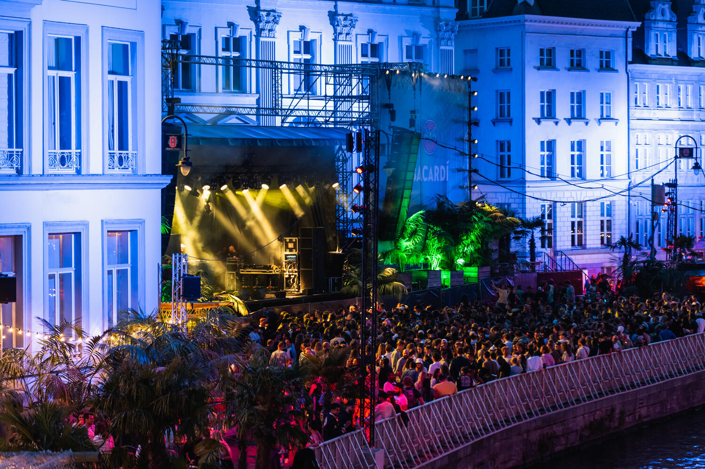
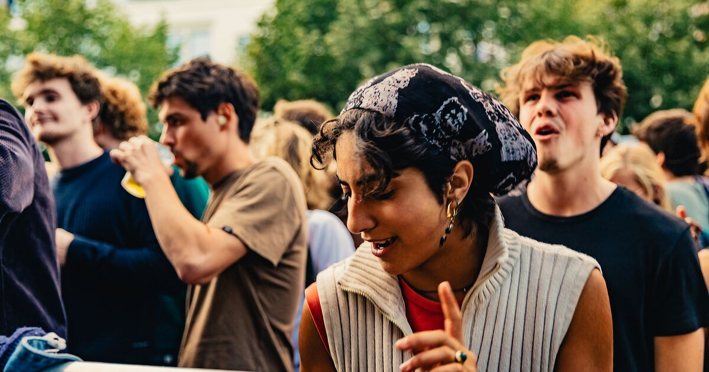
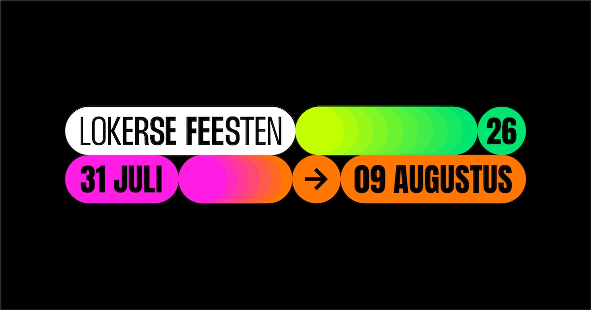
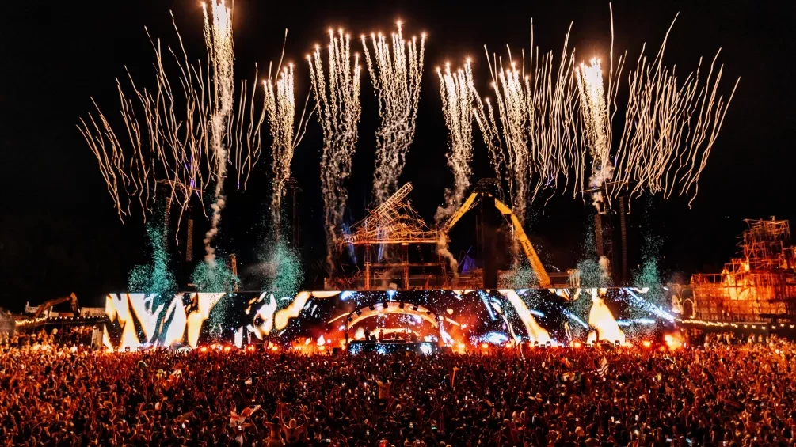

May 7 · 9 · 10 — three nights only
OPUS — Bach × Papadopoulos
Capitole Gent · Opera Ballet Vlaanderen
Christos Papadopoulos sets Die Kunst der Fuge on a corps that breathes the score. Relocated from the closed Opera house.[30]
— On stage tonight, and every night through December —
★ Ghent · Antwerp · Brussels · abroad ★
May ▸ December · Anno MMXXVI
✦ ✦ ✦
A poster wall for a Ghent-based couple — concerts, opera, ballet, comedy, festivals, West End weekenders. Pinned in date order. Every poster is a link to its source.
▼ Top of the Bill ▼
May · 7 / 9 / 10
OPUS
Capitole Gent · Bach × Papadopoulos
Language-free ballet on Die Kunst der Fuge; 5 min walk from Korenmarkt while Opera Gent is closed for renovation.[30][29]
May 9 · Saturday
Sol Gabetta & Antwerp Symphony
De Bijloke, Gent · Elgar Cello
Star cellist in a 13th-century hospital hall — the room is the show.[31][79]
June 8 · Monday
Massive Attack
Forest National, Brussels
Rare Belgian date for the Bristol milestone. 30 min IC from Gent-Sint-Pieters via Brussels-Midi.[3]
July 2 → 18
Gent Jazz
Bijlokesite · Two Stages, 17 Days
Patti Smith, Marcus Miller, Einaudi (Jul 14–15). Walk back over the Coupure to bed.[11][12]
Sept 26–27
Wicked · 20th Anniversary
Apollo Victoria, London
Eurostar via Brussels-Midi, ~3 h door-to-door. Jordan Litz joins as Fiyero from May 19.[51][62]
Nov 13 · Friday
Evita — 50 Years
Stadsschouwburg Antwerpen
Belgian premiere of the Golden Jubilee tour, English, 30-piece orchestra, Vajèn van den Bosch as Eva.[41]

May 7 · 9 · 10 — three nights only
OPUS — Bach × Papadopoulos
Capitole Gent · Opera Ballet Vlaanderen
Christos Papadopoulos sets Die Kunst der Fuge on a corps that breathes the score. Relocated from the closed Opera house.[30]
May 29 → June 13 · ten dates
Carmen
Opera Antwerpen — Wim Vandekeybus
— · — · —
Choreographer's first opera. Dance-led staging, broad reach via the idiom — even if you don't speak the libretto.[27]
Fri 1 May
Isata Kanneh-Mason
De Bijloke · Solo recital
The opening of De Bijloke's marquee classical month.[31]
Tue 5 May
Tame Impala
AFAS Dome · Antwerp
Sportpaleis is now AFAS Dome. Psych-pop in the big shed.[1][73]
Tue 5 May
Tinariwen
Ancienne Belgique · Brussels
Tuareg blues in the AB main hall.[5]
May 6 → 8 — residency
Amenra
Ancienne Belgique · 3 nights
Belgian post-metal in their hometown room.[5]
Thu 7 May
Das Pop · reunion
Trix · Antwerp
Back after fourteen years; Trix is club-sized, will sell.[6]
Fri 8 May
Olivia Dean
Forest National · Brussels
Soul-pop in the Vorst arena.[3]
Sat 9 May · the marquee night
Sol Gabetta · Elgar
De Bijloke · Antwerp Symphony
Cellist of the moment in a 13th-c. hospital hall. Dinner at Otium 0.4 mi away.[31][75]
Sat 9 May
Mitski
Forest National · Brussels
Indie singular at arena scale.[3]
May 9 + 10 · double
Bazart + Di-rect
Lotto Arena · Antwerp
Belgian indie. Sunday adds Di-rect.[4]
Mon 11 May
Comedy Marathon
Capitole Gent · NL
Multi-act stand-up bill.[38]
Tue 12 May
An Evening With Alex Agnew
Capitole Gent · intimate
A small-room Agnew before the AFAS Dome run in October.[38]
Wed 13 May
The Neighbourhood
AFAS Dome · Antwerp
Indie-rock at arena scale.[1]
May 13 + 14
Damso sold out
ING Arena · Brussels
Both nights gone. Resale legally constrained in Belgium.[2][71]
Wed 13 May
Jens Dendoncker
CC Hasselt · Over de Romantiek
NL theatre-comedy on the road.[45]
Thu 14 May
Urbanus · Bes Tof
Stadsschouwburg Antwerpen
Plus Laura Ramoso (EN) at Koningin Elisabethzaal same night.[49]
Fri 15 May
Conan Gray
AFAS Dome · Antwerp
Pop bill night.[1]
May 15 + 16 · two nights
Renaud Capuçon — Brahms & Schumann
De Bijloke · Symfonieorkest Vlaanderen
String of star soloists across May at Bijloke. Two nights for a date with leeway.[31]
May 17 · Sun
Ne-Yo
AFAS Dome · Antwerp · R&B
Same night Ha Concerts hosts Grieving together, healing together — small-room world music, polar opposite vibe.[1][33]
Thu 21 May
Dermot Kennedy
Forest National · Brussels
Singer-songwriter at scale.[3]
Thu 21 May
Matteo Lane
Stadsschouwburg Antwerpen · EN
English-language stand-up, Antwerpen run.[49]
Sun 24 May
Vilde Frang × Kammerorchester Basel
De Bijloke · Gent
Star Norwegian violinist closing the spring run.[31]
Thu 28 May
Madison Beer
Lotto Arena · Antwerp
Pop. Isabel LaRosa & Lulu Simon support.[4]
Sat 30 May
Zucchero
Lotto Arena · Antwerp
Italian rock bill — ahead of his Ziggo Dome Amsterdam date 29 May.[4][58]
June 4 · 5 · 6 — final NTGent run
ONE SONG
NTGent Schouwburg · Miet Warlop · in English
❦ ❦ ❦
€15–28. Three nights, the final time at NTGent. Sint-Baafsplein cluster for the pre-show drink.[34][78]
Tue 2 June
Big Thief
Forest National · Brussels
Indie-folk, big-room.[3]
Mon 8 June · the date of the year
Massive Attack
Forest National · Brussels
★ ★ ★
A rare Belgium date for a milestone act. 30 min IC from Ghent to Brussels-Midi, then metro Albert.[3][62]
Sun 14 June
Kaytranada
ING Arena · Brussels
Heysel-plateau electronic.[2]
Fri 19 June
Tinlicker
Ancienne Belgique · Brussels
Melodic electronic in the AB.[5]
Sun 21 June
Bassem Youssef
Stadsschouwburg Antwerpen · EN
Belly of the Beast Tour.[49]
June 22 + 23
The Streets
Ancienne Belgique · two nights
UK garage; double-bill at AB.[5]
Sun 28 June
Guns N' Roses
AFAS Dome · Antwerp
Hard rock at the dome.[1]

July 2 → 18 · 17 days, two stages
Gent Jazz
Bijlokesite · Gent · the date-night festival
Terence Blanchard & Ravi Coltrane · Celeste · Marcus Miller · Alabama Shakes · Patti Smith Quartet · Ludovico Einaudi (Jul 14–15). A ticket grants access to all of that day's concerts.[11][12]
Wed 8 July
Ludovico Einaudi
Forest National · Brussels
Romantic, low-noise — the date-night-safe arena pick.[3]
Thu 9 July
ZZ Top
Forest National · Brussels
Classic blues-rock.[3]
Thu 27 Aug
Joji
Forest National · Brussels
Lo-fi pop closing the summer arena run.[3]
Fri 18 Sept
Pussycat Dolls
AFAS Dome · Antwerp
Reunion-tour pop. Same night Judas Priest plays Forest National.[1][3]
Mon 5 Oct
Simple Plan
Forest National · Brussels
Pop-punk nostalgia.[3]
Oct 8 · 9 · 10 — three-night run
Alex Agnew · No More Heroes
AFAS Dome · Antwerp · €45–65
— · ★ · —
The big-room run after the May Capitole intimate.[44]
Sat 17 Oct
J. Cole · Fall-Off Tour
Belgium · Live Nation
Date set, venue via Live Nation BE. Same night Lake Street Dive plays AB.[65][5]
Thu 8 Oct
Spiritbox
Lotto Arena · Antwerp
Modern metal.[4]
Thu 15 Oct
Bryan Adams
AFAS Dome · Antwerp
Classic-rock crowd-pleaser; broad date appeal.[1]
Sun 18 Oct
Amon Amarth
Lotto Arena · Antwerp
Death metal.[4]
Fri 23 Oct
Deep Purple
Lotto Arena · Antwerp
Hall-of-Famers in the smaller of the two AFAS-complex rooms.[4]
Sun 25 Oct
Laura Pausini
Forest National · Brussels
Italian pop. Pair with Lara Fabian Nov 12 same room.[3]
Sat 31 Oct
Jungle
Forest National · Brussels
Modern soul, dancing crowd.[3]
Sun 1 Nov
Placebo
AFAS Dome · Antwerp
Alt-rock, all-seater.[1]
Mon 2 Nov
Tokio Hotel
Forest National · Brussels
2000s pop-rock revisit.[3]
Nov 6 → 8 → tour
Oliver Twist · Deep Bridge premiere
Capitole Gent · then Stadsschouwburg Antwerpen Dec 9+
New Flemish family musical with Nordin De Moor as Fagin. NL-language, full orchestral staging.[40]
Thu 5 Nov
Niall Horan
AFAS Dome · Antwerp
Pop crooner.[1]
Mon 9 Nov
Korn
AFAS Dome · Antwerp
Nu-metal night.[1]
Fri 13 November · Belgian premiere
EVITA · 50 Years
Stadsschouwburg Antwerpen · 30-piece orchestra · EN
★ ❦ ★
Vajèn van den Bosch as Eva Perón, Milan van Waardenburg as Ché. The English-language Golden Jubilee tour stops in Antwerp for the Belgian premiere.[41]
Thu 12 Nov
Lara Fabian
Forest National · Brussels
Vocal pop.[3]
Wed 25 Nov
José González
Ancienne Belgique · Brussels
Acoustic, hushed room — the AB at its most concentrated.[5]
Dec 3 + 4
Studio 100 · SingAlong in Symphony
AFAS Dome · 30-yr anniversary
NL family show, Symfonieorkest Vlaanderen.[42]
Sun 6 Dec
Trixie Whitley
Ancienne Belgique · Brussels
A small, soulful AB night.[5]
December · season opener
La traviata
Opera Antwerpen · directed by Tom Goossens
Opera Ballet Vlaanderen's "À la flamande" 2026/27 season opens with Verdi. Concert Lohengrin, new Sleeping Beauty and Der Schmied von Gent follow through 2027.[28]
Dec 15 + 16 · two nights
Girls In Hawaii
Ancienne Belgique · Brussels · Belgian indie
A two-night home-territory closer at AB. Same week, William Boeva's Drift at Zaal Lux Kapellen Dec 23.[5][46]
▼ Off-Bill Field Trips ▼









▼ Take the Train ▼
From Ghent: ~30 min IC to Brussels-Midi · then Eurostar / TGV / ICE to ▾[62]
Platform 1 · the headline target
London
~3 h door-to-door · Eurostar via Brussels
Platform 2 · ~2 h via Brussels
Paris
Eurostar · 1 h 25 to Gare du Nord
Platform 3 · ~3 h via Antwerp
Amsterdam
Eurostar · 2 h 05 from Brussels
Platform 4 · ~3 h via Liège
Cologne
ICE · 2 h 14 · 5×/day from Brussels
▼ Box Office ▼
▼ Pre-Show ▼
Capitole Gent
Basta Resto (Mediterranean, 200m, Zuidstationstraat) or Mister Spaghetti (Botermarkt 2). On-site bars + restaurant.[76][80]
De Bijloke
Otium Cucina Italiana (0.4 mi, 4.5★) · Le Homard Rouge (0.3 mi). Or the in-house café in the 13th-c. hospital.[75][79]
NTGent
Sint-Baafsplein terrace café for croque-monsieur tier light bites pre-show. The whole Sint-Baafsplein cluster works.[78]
Opera Gent
⚠ Closed for renovation through 2026 — productions at Capitole this season.[29]
AFAS Dome / Sportpaleis
Pampas Rodizio at Lange Lobroekstraat 105–111 is the established pre-event spot. In-venue catering inside the dome.[77][73]
ING Arena, Brussels
Heysel-plateau cluster — metro Heysel/Heizel; restaurant pickings on the plateau itself are limited, eat in town first.[74]
▼ Stage Door ▼
Immersive & workshops
Workshops, brewery tours and immersive shows worth booking for a couple in Ghent in 2026.
survey · 25 cites
Seasonal festivals
Month-by-month — UNESCO carnivals, flower festivals, street fests, winter markets.
survey · 29 cites
Spectator sports
Six Days of Ghent · KAA Gent · cobbled spring classics.
recon · 8 cites
Spa & themed stays
Thermal day-trips, full spa-hotel weekends, themed nature stays.
survey · 25 cites
Train city breaks
20+ cities ranked by train time, vibe, and best 2026 event windows.
expedition · 104 cites
Outdoor adventures
Day trips, weekend escapes, big-ticket adventures — by season.
survey · 42 cites
— end of bill — · 80 sources · 9 min read · printed at Atlas Press, Ghent · MMXXVI